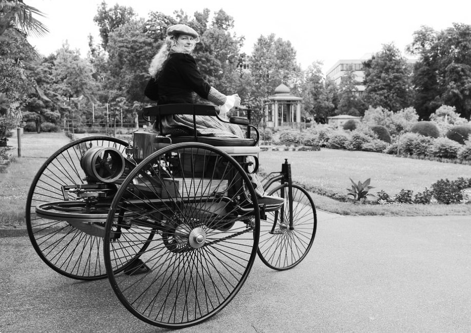

About
HistoryIt's not the idea, it's the implementation that counts.
History
- Tradition
- The names of the founding fathers of Mercedes-Benz AG, Gottlieb Daimler and Carl Benz, are inextricably linked with the creation of the automobile. The history of the automobile began in 1886 with Daimler's first motor carriage and Carl Benz's three-wheeled vehicle.
- The world's first automobile
- The financial success of his gas engine factory secures Benz an economic basis, enabling him to devote himself to his vision of an engine-driven vehicle. But since his two-stroke engine is too large and too heavy to be installed in a vehicle, Benz puts all his efforts into the four-stroke principle. Just like Gottlieb Daimler and Wilhelm Maybach, he has to find a way to increase engine speed. And, just like the Cannstatt engineers, he focuses on ignition and valve control.
Museum
Heute
im Museum
- Mercedes-Benz Museum,
top atrraction in Stuttgart - Together with other exhibits, they form the centrepiece of the permanent exhibition covering a total of 16,500 square metres in twelve rooms. This unparalleled world can be discovered on two tours that follow a “Legend” and “Collection” narrative.
- The Mercedes-Benz Museum in Stuttgart celebrates the automobile invented by Carl Benz in 1886: it relates its history and tells its stories, bringing both alive by placing them in the context of technology, day-to-day life, social history and popular culture. More than 160 vehicles of all types are the main protagonists. They range from some of the oldest automobiles ever built to legendary racing cars and futuristic research vehicles.
- The part of the month is a selected product highlight, such as an promotion part for a special price or an interesting parts reproduction. The range currently includes around 160,000 genuine parts for classic vehicles.